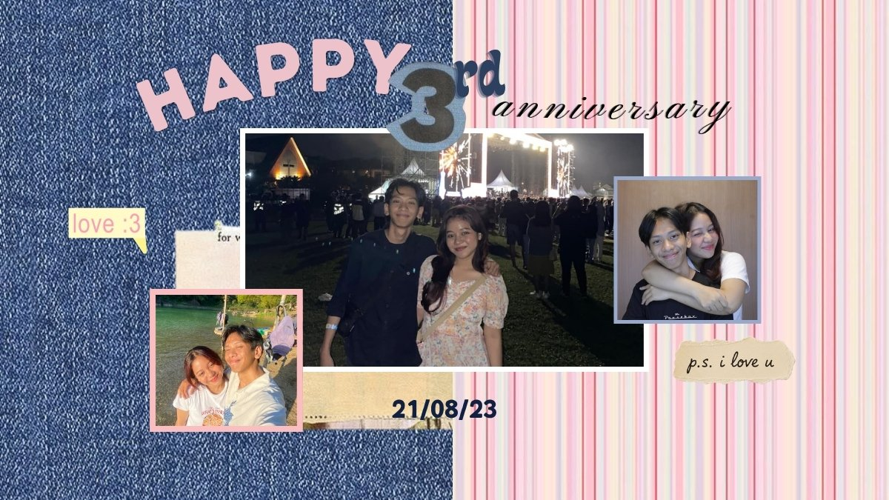

21/08/2026
Happy
21/08/2026
Happy 3rd Anniversary!!
thru ups and downs, we made it to the 3rd anniversary sayang! terima kasih untuk semua sayang, cinta, dan kasih yang sudah ada for the entire 3 years. terima kasih sudah banyak mengusahakan kita dan aku ya sayang, terima kasih untuk semua waktu, usaha, tenaga, uang, dan kasih sayang selama ini ya sayang.. makasih udah mau ajak aku coba gelato 3 tahun lalu HEHEH :D dannn aku tau gak mudah sama sekali lewatin 3 tahun ini, banyak sedih dan susah nya di 3 tahun ini, makasi ya sayang mau selalu coba dan berusaha sama aku.. aku juga minta maaf atas banyaknya kesalahan, buruk, dan tingginya ego dari aku.. semoga kedepannya bisa sama-sama grow jadi lebih lebih lebihhh baik lagi, sama-sama capai goals yang dipunya, semakin saling sayang, semakin mengerti satu sama lain, semakin dewasa, semakin sehat, dan bahagia bareng-bareng yaaa. aku ga sabar liat kita di anniv berikutnya, semoga anniv berikutnya dalam keadaan happier, healthier, clingier, richer, better, dan we love, understand each other more deeply.. aamiin. i love u more than these words could ever say.
-`♡´-
made with love <3

to many moreeeee; concerts date, sarapan date (karna kamu gabisa, jarang-jarang gapapaaa kokkk :D), lunch date, dinner date, study date, jalan kaki date, pameran date, beach date, lego date, melukis date, cooking date, coffee date, dessert hunting date, gym date, photobox, muter-muter date, belanja date, trekking date, hunting new places date, dan banyak date lainnya kedepannyaa! terima kasih ya sayangg sudah punya ide date yg seru-seruuu 3 tahun inii. semoga suka ya ide ucapan anniv aku tahun ini.. karna LDR, jadi ucapan ini duluu. tapi aku punya secret couple gift jugaaa HEHE, kita unboxing soon kamu balik jogja ya sayanggg :3